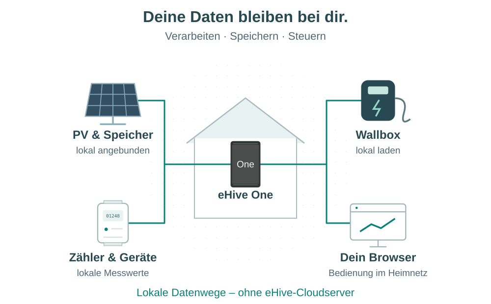
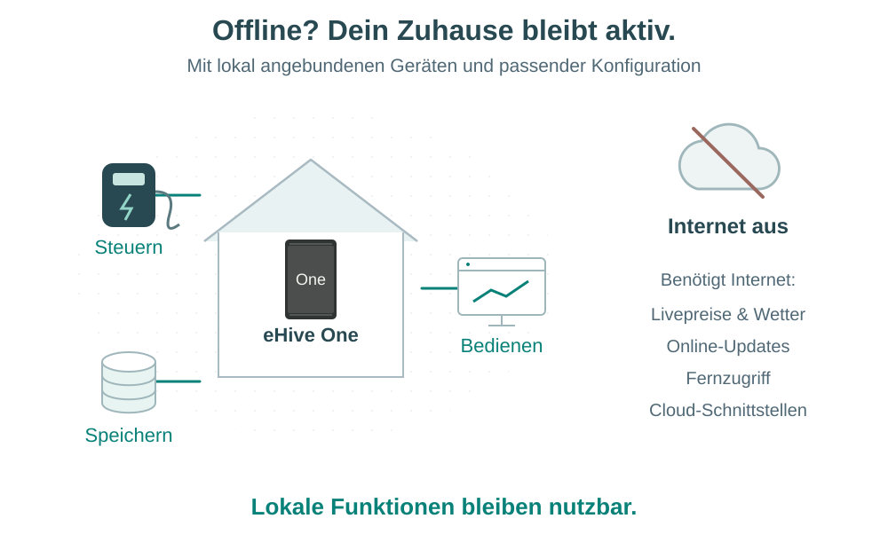
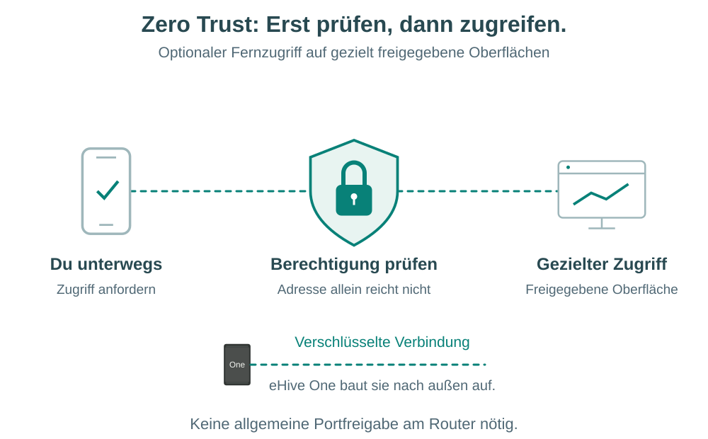

Warum wir uns bewusst gegen eine Pflicht-Cloud entschieden haben
Dein Zuhause soll auch dann funktionieren, wenn das Internet ausfällt. Und du sollst selbst entscheiden, wer deine Energiedaten sieht. Verbrauch, Ladezeiten und Energieflüsse verraten viel über deinen Alltag. Deshalb gehören diese Informationen für uns dorthin, wo sie entstehen: zu dir.
Wir haben eHive One so aufgebaut, dass Steuerung und Datenverwaltung auf deinem Gerät laufen. Für den lokalen Betrieb brauchst du keine Verbindung zu einer eHive-Cloud. Dein Energiemanagement hängt damit nicht davon ab, ob ein zentraler Server erreichbar ist.
So machen wir das – ganz einfach
eHive One kommuniziert über lokale Schnittstellen mit den kompatiblen Geräten in deiner Anlage. Die Verarbeitung und Speicherung erfolgen vor Ort. Du bedienst das System im Browser über dein Heimnetz. Dafür müssen deine Betriebsdaten nicht erst an einen eHive-Cloudserver gesendet werden.

Internet aus. Dein System läuft weiter.
Du kannst eHive One den Internetzugang vollständig entziehen und ihn weiterhin im lokalen Netzwerk bedienen. Lokal angebundene Geräte, eingerichtete Steuerungen und lokale Auswertungen bleiben nutzbar. Wir schalten dir keine lokalen Funktionen ab, nur weil du offline bleiben möchtest.
Für einen vollständigen Offlinebetrieb müssen auch die angebundenen Geräte lokal erreichbar sein. Dienste, die aktuelle Daten aus dem Internet beziehen, brauchen weiterhin eine Verbindung – etwa dynamische Strompreise, Wetterprognosen, Online-Updates oder reine Cloud-Schnittstellen anderer Hersteller. Auch Fernzugriff benötigt Internet. Welche Möglichkeiten du offline nutzt, hängt deshalb von deinen Geräten und deiner Konfiguration ab.

Fernzugriff nur, wenn du ihn möchtest
Wenn du von unterwegs zugreifen möchtest, kannst du einen geschützten Fernzugriff einrichten. Die verschlüsselte Verbindung wird vom eHive One nach außen aufgebaut. Du musst dafür keinen Router-Port öffnen. Freigegeben werden gezielt die vorgesehenen Oberflächen. Der Fernzugriff ist optional und keine Voraussetzung für die lokale Steuerung.
Was bedeutet Zero Trust?
Zero Trust heißt: Ein Zugang wird nicht automatisch als vertrauenswürdig behandelt. Wer zugreifen möchte, muss seine Berechtigung nachweisen und erhält nur den vorgesehenen Zugriff. Eine bekannte Internetadresse allein ist also keine Zugangsberechtigung. Bei unserem optionalen Fernzugriff gehören dazu ein geschützter Zugang und die gezielte Freigabe einzelner Oberflächen.

Deine Daten bleiben bei dir. Du entscheidest, ob dein eHive online geht.